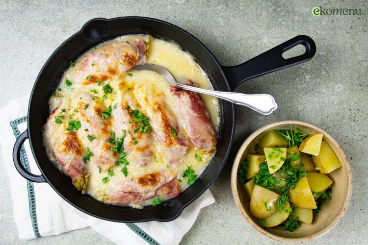

Chicory rolls with ham in cheese sauce

Description
A true classic! Chicory wrapped in ham, topped with a rich cheese sauce and a crispy cheese crust on top. The description alone makes your mouth water. In Belgium, chicory is sometimes called "white gold". Chicory originated in Belgium, so in many languages you can find a geographical reference to Brussels or Belgium in the name. Think of 'endives de Bruxelles', 'Belgian endives' or 'Brüssler weisse chicorei'.
Ingredients
- 4 Chicory
- 600g Potatoes, floury
- 100g Shoulder ham
- 5g Fresh parsley
- 75g Grated cheese
Steps
- Preheat the oven to 200°C and boil water with a pinch of salt. Wash or peel the potatoes, cut them into pieces and boil them for about 20 minutes until tender. Then drain the water from the potatoes and leave to steam-dry for a while.
- Boil another pan of water. Rinse the chicory stalks, remove the bottom and boil for 8-10 minutes (large ones you can halve). Remove them from the pan using a slotted spoon and drain very well in a colander. Save the cooking water.
- For the cheese sauce, melt the butter in a small saucepan. Whisk in the flour, making sure it absorbs the butter to a sandy texture. Pour in the chicory cooking water little by little (about 250 ml for 2 persons) and keep stirring until the sauce thickens. Add half of the cheese and season with a pinch of nutmeg, pepper and salt.
- Roll up the chicory in a slice of ham, place the rolls side by side in an oven dish and pour the cheese sauce on top. Sprinkle the remaining cheese on top and bake for 15 minutes in the preheated oven, with the last 5 minutes on the grill function.
- Chop the fresh parsley into small pieces and spoon through the boiled potatoes. Serve the chicory casserole with it.